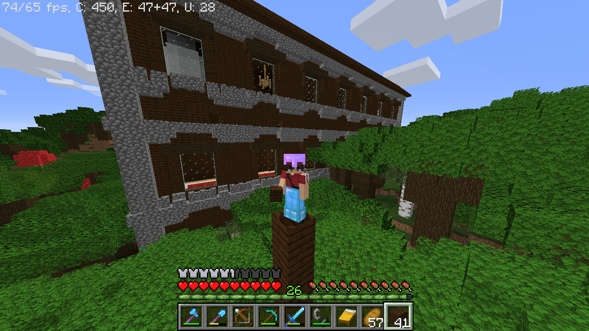

Eu gosto de pudim e gosto de metal, mas eu tbm gosto de estudar mas meu amigo, Samuel, me fez
gostar de programar dnv, ;). E o segundo vídeo é pra ensinar como eu botei o favicon.
Quando era mais novo, gostava de jogar video game, mas especificamente, jogos de tiro (até hoje eu gosto).
Então como eu gostava demais de jogar, treinei muito e virei um grande jogador conquistando vários prêmios
de alguns jógos como, fortnite e raimbow six.
Depois eu parei um pouco de jogar esses jógos e fui jogar minecraft e fiquei muito bom. um dia, eu cheguei
na casa da bruxa e eu andei mais de 13000 blocos para chegar la e a mina prova é essa foto:

Depois de um tempo, entrei para o jiu jitsu e fui muito bem. Por causa disso, vendi meu video game e me de-
sapeguei aos meus video games e passei a frequentar mais o jiu jitsu.
Em 2020, começou uma pandemia e parei um ano de estudar, pois eu não iria mais morar no Brasil e a pandemia
acabou com os nossos planos e ficou muito ruim para os meus pais me matricularem em uma escola decente em me-
io a essa catastrofe. Mas agora em 2021, estou indo muito bem na minha escola nova, Maria Ester, que foi a mi-
nha primeira outra escola, eu me adaptei muito rápido, e estou aqui hoje fazendo esse site para contar a minha
história para vcs. Tmj é nois, vlw flw.